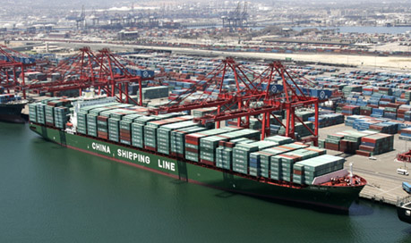

Wobblies Connect With Truckers Across West Coast
By Adam Welch - Industrial Worker, August 2004
Following a two week strike wave by truckers working out of West Coast ports in early May and a second June 28 - July 4 strike wave by their East Coast counterparts, IWW organizers have been meeting with strike leaders in the West Coast ports. They have issued a newsletter, Troquerro, and are posting updates on the truckers' struggle...
Port employers have for many years classified truckers as "independent contractors," making the drivers responsible for paying their own insurance, maintenance on trucks and skyrocketing fuel prices. Independent contractor status excludes the truckers from traditional labor laws as well.
In Los Angeles, thousands of truckers drive cargo out of the Long Beach and San Pedro ports. They are almost entirely long-term immigrant Latinos and most speak English. A strike called in LA June 28 in solidarity with striking East Coast truckers slowed down the port for several hours the first morning, but quickly fizzled. Toward the end of July, truckers at CALCO, a medium-sized company with 60 drivers, organized a week-long strike in response to firings of trucker activists. The drivers were able to win the fired activists their jobs back and a small wage increase.
The LA truckers have a long tradition of organizing going back into the early '90s. Several successive attempts were made to organize independent truckers organizations, such as the Latino Truckers Alliance (LATA), creating a truckers cooperative, and organizing with business unions such as the Teamsters and Communications Workers. Currently several pro-union groups of truckers meet separately without much coordination.
Port organizers with the Teamsters held a July 30 forum at their LA hall, where the IBT announced plans to work with trucking companies in a corporate-style campaign to convince port employers to drop the existing companies that hire independent contractor truckers and switch to trucking companies already organized under their union.
Supposedly truckers could become employees of these companies and join the Teamsters. Their union has been providing legal support to drivers in several ports, but has generally discouraged the wildcat strikes and direct action organized by the truckers.
It is not yet clear how truckers will respond to the plan to make deals with employers instead of organizing the truckers to use their power of shutting down the ports.
During the first strike wave, the Oakland drivers joined after the Los Angeles and Stockton drivers. Three leaders have emerged: Ruben Lopez, Dealth Jean and Ervinder Dhanda, who are respectively Latino, African-American and Indian. During the first strike wave, the three met with port bosses and arranged a settlement which met with some opposition. Oakland truckers received raises that varied widely from company to company, most within the 5-15 percent range.
Many drivers reported that initially some companies supported the strike. One driver said that in his midsized company the bosses asked the strike leaders to step forward, fired them, and then told the remaining drivers to stay on strike. Two weeks into the strike the shipping firms authorized a 30 percent increase in rates paid to companies, with the companies passing along as much or as little as they pleased to the truckers.
After the strike the port employers attempted to initiate a court injunction against the three leaders, trying to hold them responsible for altercations between the truckers and police and claiming the drivers trespassed on company property during the strike. The injunction was later dropped, but on the condition that the three not participate in the strikes called for June 28 through July 4. Many truckers felt intimidated by the injunction and believed that if they participated in future strikes they could face fines or jail time.
The Port of Stockton is located in the rural central valley of California, where 200 to 250 truckers ship cargo to nearby cities and warehouses. Here the truckers are over 85 percent Sikh Indian and have been meeting since the first strike wave, which they claim to have initiated. Sikhism is a religion that emerged in the North West (Punjab) area of what is now India in the 16th century. Sikhs often hold driving jobs or practice farming in the Punjab region of India.
During the strike the Stockton truckers were able to win 20-25% raises, reduce the waiting times they have to endure, reverse the firing of a key strike leader, and make the employers apologize.
Drivers have often had to endure long waits with no or little pay while cargo is being unloaded. Before the strike, pay rates for each load had not changed in over 10 years. Since the strike the companies have been slowly increasing wait times and the latest rumor is that rates will soon be reduced.
Drivers say that the gains of the strike are being eroded away while many of them struggle to put food on the table or are even losing money after paying for fuel and maintenance costs. They say that some drivers are forced to work over the legal limit of 11 hours per day, and pay sometimes amounts to $6 an hour or less when wait times are included.
Eastern Truckers Rebellious
The July strike tied up ports along the Eastern seaboard for periods ranging from a couple of days to two weeks (not counting the time needed to clear the backlog of containers). Strike action was reported at ports at Charleston, S.C., Miami, New Orleans, Baltimore, Houston, New York, Newark, N.J., Hampton Roads, Va., and Savannah, Ga.
Charleston and Miami were particularly hard hit. As late as July 12, the Journal of Commerce reported a two-week backlog of containers at the Port of Miami as a result of the strike, after a federal judge issued an injunction against the strikers on its 12th day. Port officials recommended that ships with large numbers of containers bypass the port.
